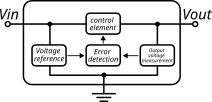
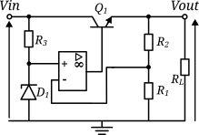
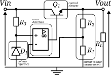
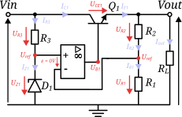

Régulateur de tension série avec AOP#
Dans le réulateur présenté dans la partie précédent utilise un transistor comme élément de contrôle mais cette fois, l’objectif est d’utiliser un AOP (amplificateur opérationel) en tant qu’élément de contrôle.
Import and Formatting#
The goal of this section is to import all the necessary files and libraries required for the subsequent data analysis.
It also includes setting up the formatting parameters for the plots and visualizations.
Import#
import matplotlib.pyplot as plt
import numpy as np
from PySpice.Spice.Netlist import (
Circuit, SubCircuitFactory
)
from PySpice.Unit import *
from PySpice.Probe.Plot import plot
from PySpice.Spice.Library import SpiceLibrary
Formatting#
Adjusting Plotly chart settings for clarity and consistency.
# ---- Formatting charts
%matplotlib inline
from IPython.core.pylabtools import figsize
import matplotlib as mpl
mpl.rcParams['lines.linewidth'] = 2.0
mpl.rcParams['axes.edgecolor'] = "#bcbcbc"
mpl.rcParams['patch.linewidth'] = 0.5
mpl.rcParams['legend.fancybox'] = True
mpl.rcParams['axes.facecolor'] = "#eeeeee"
mpl.rcParams['axes.labelsize'] = "large"
mpl.rcParams['axes.grid'] = True
mpl.rcParams['grid.linestyle'] = "--"
mpl.rcParams['patch.edgecolor'] = "#eeeeee"
mpl.rcParams['axes.titlesize'] = "x-large"
Introduction to the Regulator#
Before building our circuit, we first need to define the logical blocks that compose it. These blocks are illustrated in Logical blocks of a regulator.
{kind=link}

Logical blocks of a regulator#
We can see that the regulator is made up of four logical blocks. The goal is to eventually construct an electronic circuit that performs voltage regulation.
Electronic Circuit#
The circuit that will be studied is shown in Régulateur de tension série avec un AOP:
{kind=link}

Régulateur de tension série avec un AOP#
This circuit is very similar to the previous one. It still uses a Zener diode \(D_1\) as the voltage reference, and the transistor \(Q_1\) is responsible for supplying current to the load. Resistors \(R_1\) and \(R_2\) act as the sensing elements for the output voltage.
The major difference is the addition of an operational amplifier (op-amp), which implements the error detection and correction function. In this architecture, the most important property is that the voltage difference between the op-amp’s (+) and (-) inputs is ideally zero (as long as the op-amp operates in its linear region). Therefore, care must be taken to ensure that the op-amp remains properly biased and does not saturate.
Danger
The resistor \(R_3\) is critical because it sets the current flowing through the Zener diode and therefore determines the power it must dissipate. Its value must be chosen so that the Zener operates in the middle of its regulation zone.
The main functional roles of each component are summarized in Series voltage regulator with an op-amp — block diagram.
{kind=link}

Series voltage regulator with an op-amp — block diagram#
Equations#
Output Voltage#
Thus, the output voltage depends on the Zener diode voltage (U_{Z1}) and the resistors (R_1) and (R_2), allowing for more flexible and precise voltage regulation.
Power Dissipated by the Transistor#
Attention
Be careful with the op-amp’s output voltage: it must remain within the linear operating region.
Since the op-amp output must produce (U_\text{out}) plus the base–emitter voltage (U_{BE1}), the following condition must always be satisfied:
Demonstration#
We begin with the complete circuit used for the derivation, shown in Complete demonstration circuit for the voltage regulator :
{kind=link}

Complete demonstration circuit for the voltage regulator#
We now detail the derivation of all the electrical equations governing this simple Zener-transistor regulator.
Calculating the Output Voltage#
We begin by determining the reference voltage using the loop formed by \(U_\text{in}\), \(U_{R3}\), and \(U_{Z1}\):
Thus, the reference point is simply:
According to the operating principles of an op-amp in its linear region, the input voltages satisfy:
This allows us to write the voltage across resistor \(R_1\) as:
Using Ohm’s law, the current through \(R_1\) is:
Since the op-amp inputs have extremely high impedance, no significant current flows into them. Therefore:
We can now compute the voltage across \(R_2\):
Finally, the output voltage is simply the sum of the voltages across \(R_1\) and \(R_2\):
Substituting the expression for \(I_{R1}\):
and using
we obtain:
Power Dissipated by Transistor \(Q_1\)#
The power dissipated by the transistor is:
To compute \(I_{E1}\), we apply Kirchhoff’s current law:
Since \(I_{R2} = I_{R1}\), we obtain:
Output Voltage at the Transistor#
To determine the transistor’s base voltage, we add the op-amp output voltage to the base–emitter junction drop:
It is important to ensure that the op-amp output voltage remains within its valid operating (non-saturated) range so that the regulator functions correctly.
Now, the goal is to run simulations on SPACE.
SPICE Setup#
The next objective is to implement this circuit in SPICE. Before writing the SPICE netlist, we use the following schematic:
{kind=link}
Simple voltage regulation circuit implemented in SPICE#
Following this schematic, the SPICE code can be written as follows:
# ============================================================
# Circuit Definition : Montage Stabilisateur (Zener + BJT)
# ============================================================
# ------------------------------------------------------------
# Circuit Initialization
# ------------------------------------------------------------
circuit = Circuit('Montage Regulateur')
# Include required component libraries
circuit.include("lib/bjt.lib")
circuit.include("lib/zener.lib")
circuit.include('lib/UA741.sub')
# ------------------------------------------------------------
# Input Supply
# ------------------------------------------------------------
V_in = 20 @ u_V # Input supply voltage [V]
circuit.V('in', 'collecteur', circuit.gnd, V_in)
# ------------------------------------------------------------
# Polarization tension
# ------------------------------------------------------------
V_polarization = 15
circuit.V('cc', 'VCC', circuit.gnd, V_polarization@u_V)
circuit.V('ee', 'VEE', circuit.gnd, - V_polarization@u_V)
# ------------------------------------------------------------
# Initialisation resistance
# ------------------------------------------------------------
R_1 = 1.0 @ u_kOhm # R1 [Ω]
R_2 = 1.5 @ u_kOhm # R2 [Ω]
R_3 = 4.7 @ u_kOhm # R3 [Ω]
circuit.R(3, 'collecteur', 'v+', R_3)
circuit.R(2, 'emetteur', 'v-', R_2)
circuit.R(1, 'v-', circuit.gnd, R_1)
# ------------------------------------------------------------
# Initialisation zener diode
# ---------------------------------------------------------
# Zener diode for base voltage stabilization
circuit.D(1, circuit.gnd, 'v+', model='DZENER')
# ------------------------------------------------------------
# Transistor Stage
# ------------------------------------------------------------
# BJT(name, collector, base, emitter, model)
circuit.BJT(1, 'collecteur', 'base', 'emetteur', model='2N2222A')
circuit.X('U1', 'UA741', 'v+', 'v-', 'VCC', 'VEE', 'base')
# ------------------------------------------------------------
# Emitter Load
# ------------------------------------------------------------
R_emitter = 820 @ u_Ohm # Emitter resistor [Ω]
circuit.R('l', 'emetteur', circuit.gnd, R_emitter);
# ============================================================
# End of Circuit Definition
# ============================================================
# ============================================================
# Simulation Setup
# ============================================================
# ------------------------------------------------------------
# Simulator Initialization
# ------------------------------------------------------------
simulator = circuit.simulator(
temperature=25, # Simulation temperature [°C]
nominal_temperature=25 # Nominal device temperature [°C]
)
# ============================================================
# End of Simulation Setup
# ============================================================
# ============================================================
# Operating Point Analysis
# ============================================================
# ------------------------------------------------------------
# Run Operating Point Simulation
# ------------------------------------------------------------
analysis = simulator.operating_point()
# ------------------------------------------------------------
# Display Node Voltages
# ------------------------------------------------------------
print("=== Node Voltages ===")
for node in analysis.nodes.values():
print(f"Node {str(node)} : {float(node[0]):4.1f} V")
# ------------------------------------------------------------
# Display Branch Currents
# ------------------------------------------------------------
print("\n=== Branch Currents ===")
for branch in analysis.branches.values():
print(f"Branch {str(branch)} : {-float(branch[0]) * 1e3:.3f} mA")
# ============================================================
# End of Operating Point Analysis
# ============================================================
=== Node Voltages ===
Node q1#collCX : 20.0 V
Node xu1.8 : 13.0 V
Node xu1.9 : 0.0 V
Node xu1.14 : 4.6 V
Node xu1.13 : 4.6 V
Node xu1.10 : 4.6 V
Node xu1.99 : 0.0 V
Node xu1.92 : -25.0 V
Node xu1.91 : 25.0 V
Node xu1.90 : 0.1 V
Node xu1.54 : -12.4 V
Node xu1.53 : 12.4 V
Node xu1.7 : 13.0 V
Node xu1.6 : -1.1 V
Node xu1.12 : 14.9 V
Node xu1.11 : 15.0 V
Node base : 13.0 V
Node v- : 4.9 V
Node emetteur : 12.3 V
Node v+ : 5.2 V
Node vee : -15.0 V
Node vcc : 15.0 V
Node collecteur : 20.0 V
=== Branch Currents ===
Branch a$poly$e.xu1.egnd#bra : 0.114 mA
Branch vin : 22.942 mA
Branch vcc : 1.655 mA
Branch vee : -1.667 mA
Branch v.xu1.vb : 0.011 mA
Branch v.xu1.vc : 0.012 mA
Branch v.xu1.ve : -0.000 mA
Branch v.xu1.vlp : 0.000 mA
Branch v.xu1.vln : 0.000 mA
Branch v.xu1.vlim : -0.114 mA
Branch h.xu1.hlim : 0.000 mA
La tension de sortie de notre système est visible au niveau du noeud emetteur dans notre cas cela \(13 V\) dans notre système.
Reference#
https://www.youtube.com/watch?v=f2eUrpCn1zM&list=PL1VxGOb3XYh1QD4sxYYAMfiksop7V4v1E&index=12